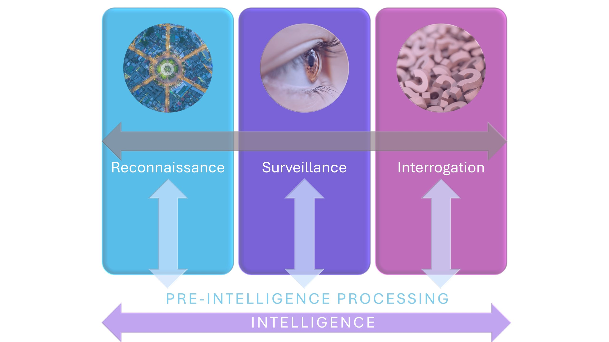

ARC THESIS®
Will there ever be a time when we can make cancers lose the hallmark features that make them cancer, and simply become more normal? How best can we consider what might indeed one day make normalcy more possible, more probable? We can start by working out how to create a focus and framework for what must, most importantly, be normal, in any given individual who has cancer.
RSII and ARC
Because this Initiative is about creating new Intelligence, it follows our own RSII™ Algorithms and Protocols, in which we undertake an elaborate and extensive process of reconnaissance, surveillance and interrogation.

RECONNAISSANCE
Ascertaining the lay of the land.
A preliminary survey to gain pertinent information, especially an exploratory survey of enemy territory. Reconnaissance collects information, or confirms or disproves the accuracy of insights or suspicions previously gained. The intent is to avoid enemy contact and accomplish its tactical task without engaging in close combat.

SURVEILLANCE
Watching the signaling.
The duty or function of watching or guarding, for the sake of proper direction. Scrutiny to eventually attain 'superintendence'.

INTERROGATION
Questioning the implications.
The process of asking many questions for a long time in order to gain information.
TAKING CANCER DOWN...
The past few decades have seen an exponential rise in our appreciation of how cancer cells differ from normal cells. Increasing numbers of TARGETED PRECISION MEDICINES have been developed which have greatly added to the options available for cancer treatments. These use as targets, unique molecular properties of cancer.
IMMUNOTHERAPY meanwhile, looks to exploit mechanisms by which the body's immune system can attack and eliminate cancer cells.
AND BUILDING NORMALCY UP
The ARC Paradigm® is focused on something quite different. We are interested in features of NORMALCY that are lost in cancer that might be regained. The postulation is that these facets of normal-ness may affect the operational 'milieu' of a cancer and the environment in which immunotherapy, and an individual's immunology more widely, can work.
Through the CCRT's RSII™ Initiative, we first look to create new insights that can yield new knowledge, from which new avenues for clinical options might hypothetically eventually be generated.
At this very initial stage, via the CCRT's RSII™ Initiative, we are undertaking a process of divergent thinking about facets of health that might be supported, tested and mapped in an individual, in the context of cancer. And developing ever more questions about what these might, perhaps, mean to the individual's ability to fight cancer, survive and, may be, live with cancer. Which may be important given that 1 in 2 of us can expect to develop cancer during our lifetimes.
Is there an optimal way to 'be successful' with cancer, through health?